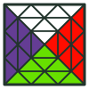

PUZZLE IMAGE TOOLS
이미지 생성기 선택
만들려는 퍼즐 이미지를 선택하세요.

FTO
FTO 이미지 · 시뮬레이터
입력과 커스터마이징을 유지하며 한 개 생성·여러 개 생성·3D 시뮬레이터를 전환합니다.
NxNxN
NxNxN 이미지 · 시뮬레이터
3D·LL 뷰, 공식 적용, 색상 편집과 단일·여러 이미지 저장을 지원합니다.
PUZZLE IMAGE TOOLS
만들려는 퍼즐 이미지를 선택하세요.

FTO
입력과 커스터마이징을 유지하며 한 개 생성·여러 개 생성·3D 시뮬레이터를 전환합니다.
NxNxN
3D·LL 뷰, 공식 적용, 색상 편집과 단일·여러 이미지 저장을 지원합니다.